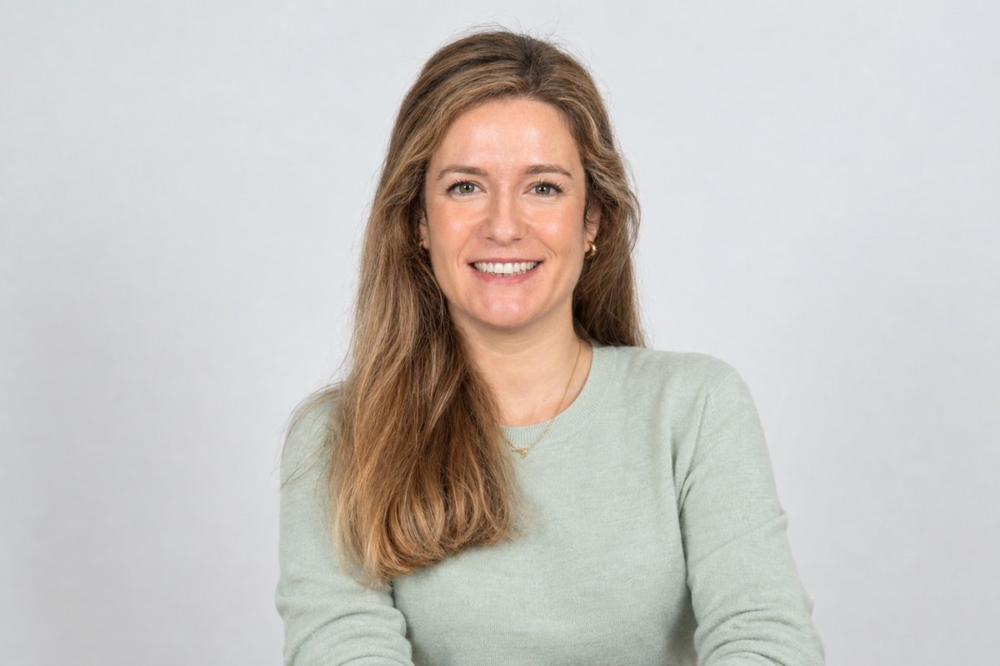

¿Sientes que quieres cambiar algo en tu vida o que hay algo dentro de ti que no te hace sentir bien y no sabes ponerle palabras?
Te acompaño a parar, escucharte, ganar claridad y encontrar tu propio camino para avanzar. A vivir en coherencia entre lo que eres y lo que quieres.
Coaching 1:1 · Online y presencial
HABLAMOS →“No sé si quiero seguir por este camino.”
“Siento que necesito hacer algo diferente.”
“Siento miedo o inseguridad y no sé cómo avanzar.”
“Tengo claro mi objetivo pero necesito estructura y acompañamiento para avanzar.”
“Quiero encontrar qué tiene sentido para mí.”
“Tengo varias opciones y no sé cuál elegir.”
“Quiero entender qué quiero realmente y qué necesito para sentirme más alineada conmigo.”

Tras más de 11 años de experiencia en el mundo corporativo, en áreas de ventas, marketing y desarrollo de negocio, descubrí que lo que más me motivaba era conectar con las personas.
Por esa razón decidí formarme como coach para acompañar a otras personas en sus procesos de cambio, autodescubrimiento y crecimiento, tanto en lo personal como en lo profesional.
Hoy quiero poner toda esa experiencia al servicio de algo que para mí tiene todavía más sentido: ser un vehículo que te acompañe en tu propia transformación.
Presencial en Tres Cantos · Online en toda España
Yo no te daré las respuestas. A través de preguntas te acompañaré a que tú misma ganes claridad, tomes conciencia y encuentres tus propias respuestas.
Cada proceso es único y se adapta a tu momento, a lo que necesitas trabajar y a los objetivos que quieras alcanzar.
Un espacio seguro donde puedas expresarte con confianza, honestidad y libertad.
Trabajaremos con herramientas prácticas para que puedas convertir la reflexión en claridad y la claridad en acción.
Coach en Tres Cantos · Coaching online en toda España
También puedes encontrarme si buscas coach en Colmenar Viejo, Alcobendas o San Sebastián de los Reyes.